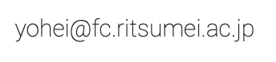

Open Lab 2023
Open Lab ※ This event has already ended.
The Open Lab sessions from June 5 to 13 will be held on the following dates.
The seniors in the lab are waiting for you! Ask as many questions as you want about laboratory life, job hunting, the graduation thesis, the faculty, etc.
| Where: Social Intelligence Laboratory , Creation Core 7th Floor Map |
|
| 12:10〜13:00（Student Only） 13:00〜14:30（Student and Professor：Murakami） 14:40〜16:10（Student Only） | |
| 12:10〜13:00（Student Only） 13:00〜14:30（Student and Professor：Murakami） 16:20〜17:50（Student Only） | |
| 14:40〜16:10（Student Only） | |
| 12:10〜13:00（Student Only） 13:00〜14:30（Student Only） 14:40〜16:10（Student and Assistant Professor：Pituxcoosuvarn） | |
| 12:10〜13:00（Student Only） 13:00〜14:30（Student Only） 16:20〜17:50（Student Only） |
Talk with the Professor
In addition to the above dates, if you have any questions about your research or career path, please send your name and preferred date/time(s) to the following email address for an individual interview.
